卷心菜、花心丈夫和斑马
有趣的逻辑问题
三个男人和他们的妹妹
9次过河法的具体过程如下图所示。采用这种方法过河，9次中至少有6次需要女人动手划船，甚至全部9次都由女人划船也无不可，这大大减弱了问题中的大男子主义。简言之，第一、第二、第三对兄妹依次过河，而且三次都是哥哥先下船，将妹妹独自留在船上。
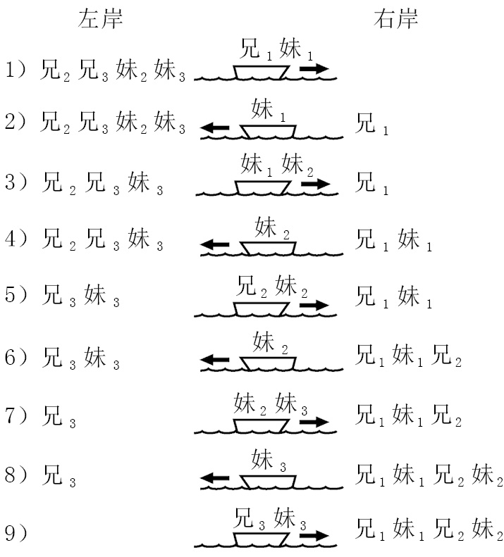
条件更苛刻时，上述第二步是不允许的，因为第一对兄妹中的妹妹返回左岸时，她将在哥哥不在场的情况下独自面对没有血缘关系的男性。在这种情况下，最快的渡河方案需要11次才能完成。狼、羊和卷心菜问题告诉我们，要实现全部过河这个目标，其中一方需要来回渡河3次。在这道题中，我们需要先把所有女人送过河，再让她们全部回来一次，最后再把她们全部送过河。
下图展示的是一种可行方法：
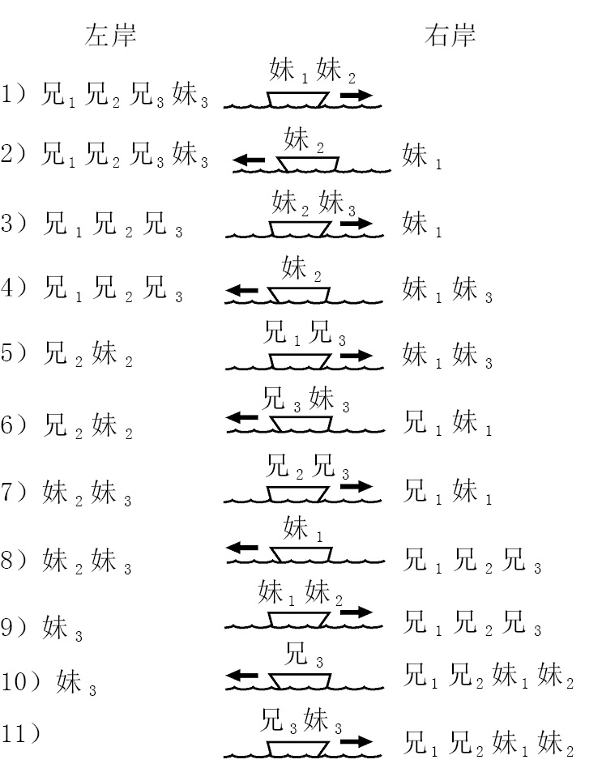
这个方法是阿尔昆想出来的（在他的版本中，一男一女是夫妻关系），而且被写成了两句拉丁语六步格诗，大意是：
二女，一女，二女，一女，二男，夫妻俩，
二男，一女，二女，一男，夫妻俩。
过桥
我在正文中提到的方法是让通行速度最快的约翰逐一陪着他的三个朋友过桥。他陪保罗过桥用时2分钟，返回用时1分钟。他陪乔治过桥用时5分钟，返回用时1分钟。最后他陪林戈过桥用时10分钟。所需时间总计为：2 + 1 + 5 + 1 + 10 = 19分钟。
乍一看，这种方法效果最好。既然约翰的速度最快，为什么不让他多跑几次呢？但这个方法并非最佳答案，因为让速度比较慢的两个人同行，可以取得更好的效果。具体方法如下：
（1）约翰陪保罗过桥用时2分钟，返回用时1分钟。
（2）乔治和林戈一起过桥，用时10分钟。
（3）他们把手电筒交给保罗，由保罗带回到桥的另一边，这个过程用时2分钟。
（4）最后约翰和保罗一起过桥，用时2分钟。
时间总计为：2 + 1 + 10 + 2 + 2 = 17分钟。
这道题非常奇妙，因为减少约翰的参与似乎是一个错误的做法，但最终却是正解。看到答案，真的会忍不住发出惊叹声。
让两个最慢的人同行为什么可以取得更好的效果呢？为便于理解，我们不妨假设乔治过桥需要24小时，林戈需要24小时1分钟。这样一来，我们就会清楚地知道应该让乔治和林戈分享手电筒，只有这样才能把耗时24小时的过桥次数降至1次。
双重关系
这两个人的儿子是叔侄关系，而且每个人都同时是另一个人的叔叔和侄子。问题非常“简单”，却足以让人晕头转向！我们假设这两个人分别叫作阿尔伯特和伯纳德，他们的儿子分别叫作史蒂夫和特雷弗。下图是他们的家族树。
伯纳德和史蒂夫的母亲是同一个人，因此他们是兄弟关系，伯纳德的儿子特雷弗则是史蒂夫的侄子。
同样，阿尔伯特和特雷弗也是兄弟关系，因此史蒂夫是特雷弗的侄子。
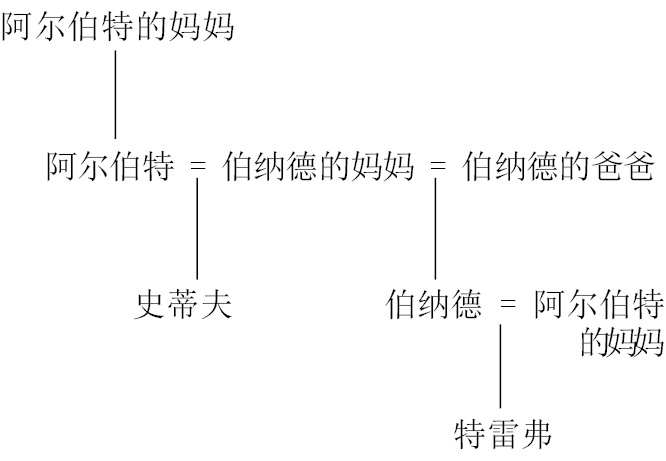
考虑到伯纳德的妈妈嫁给了阿尔伯特，所以伯纳德妈妈的婆婆是阿尔伯特的妈妈，这让本来就令人困惑的家庭关系变得更加扭曲了。既然阿尔伯特的妈妈变成了伯纳德的祖母，那么伯纳德娶的就是他自己的祖母，也就是说，他是他自己的祖父。
晚宴
最少只有一位客人。
下图揭示了这个奇怪家庭的成员关系。州长的父亲是C先生，所以州长请的客人是州长父亲的妹夫（姐夫）。同样，对这位客人的其他描述都是从不同的角度，包括从州长的哥哥或弟弟（E先生）、州长的岳父（B先生），以及州长的姐夫或妹夫（D先生）等角度来介绍他与州长之间的关系。
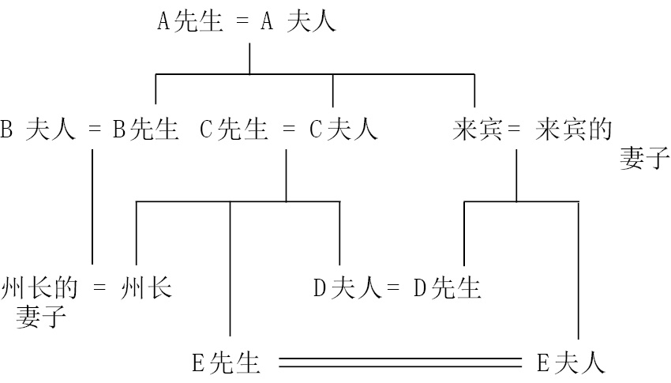
谁在说谎
我们在判断谁在说真话、谁在说谎话时，不能产生自相矛盾的结果。
假设波尔塔说的是真话，葛丽塔就在撒谎，进而可以推断罗莎说的一定是真话。但是，如果罗莎说的是真话，就说明波尔塔和葛丽塔都在说谎，这就自相矛盾了。所以波尔塔说的不是真话。
既然波尔塔在说谎，葛丽塔说的就是真话，也就是说罗莎在撒谎。如果罗莎在撒谎，那么波尔塔和葛丽塔中至少有一个人说的是真话，这句话是成立的。所以，波尔塔和罗莎在撒谎，而葛丽塔说的是真话。这个结论在逻辑上不矛盾，是本题的正确答案。
史密斯、琼斯和罗宾逊
我告诉过你们，与警卫住得最近的邻居的收入正好是警卫的三倍，这意味着与警卫住得最近的邻居不可能是琼斯先生，因为琼斯先生的工资无法三等分。此外，与警卫住得最近的邻居也不是罗宾逊先生，因为警卫住在利兹和设菲尔德之间，而罗宾逊先生住在利兹。因此，与警卫住得最近的邻居，与警卫一样也住在“利兹和设菲尔德之间”的那位乘客，一定是史密斯先生。如下图所示，我们可以在右边方格图右上方的方格里打个钩。同时，我们还可以推断琼斯先生住在设菲尔德，因为这是剩下的唯一选择。
与警卫同名的那名乘客住在设菲尔德，我们又知道琼斯先生住在设菲尔德，所以警卫肯定是琼斯。如左图所示，我们可以在琼斯/警卫的方格里打上钩，然后在同行及同列的其他方格里打叉，因为琼斯不可能从事其他职业，另外两个人也不会是警卫。
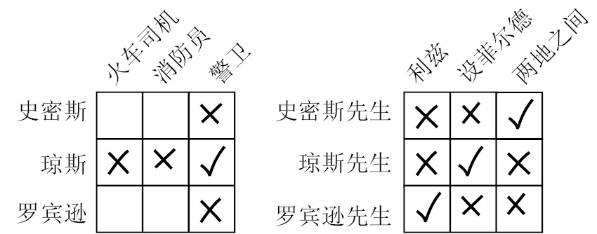
史密斯的台球水平比消防员好，这条线索说明史密斯不是消防员。（罗宾逊肯定是那名消防员。）所以我们可以在史密斯/消防员的方格里打上叉。我们已经知道史密斯不是警卫，因此，根据排除法可知，史密斯就是那名火车司机。
圣丹德海德学校
我们可以对全体人员逐一进行排查，每次假设一名女生在电影院，然后统计撒谎女生的数量，从而找出去看电影的那个女生。
例如，假设琼·贾金斯去看电影了。她回答说看电影的是琼·特威格，显然这是不真实的。同理，格蒂·盖斯的陈述也是假的。不过，贝茜和莎莉说的一定是真话。把这些信息标记到表格上，就可以更清楚地看出其中的规律。在下页的表格中，第一行显示了去电影院的女生是琼·贾金斯时所有陈述的真假情况，第二行显示了去电影院的女生是格蒂·盖斯时所有陈述的真假情况，以此类推。最后一列统计了虚假（即不真实）陈述的总数。如果T为真，F为假，那么第一行前几列的结果是F、F、T、T。全部完成后，表格就会如下页图所示。
如果至少有7个人的陈述是不真实的，那么多萝西·史密斯肯定是那个看电影的女生。
亲属关系问题
题目中出现了5个男人，分别是詹金斯、汤姆金斯、帕金斯、沃特金斯和西姆金斯。为了简单起见，我们分别叫他们J、T、P、W和S。另外，还出现了5个女人，她们是这5个男人的妻子或母亲（但她们不会是同一个人的妻子和母亲。金斯利代尔的爱情虽然比较奇怪，但也没有奇怪到这种地步）。接下来，我们通过血缘关系来确定这些女人的身份，用小写字母表示母亲，例如j是J的母亲，t是T的母亲，以此类推。
我们需要画一个表格。上面一行填入5个男人的名字，下面一行填入他们的妻子的名字，所以一开始的时候，下面一行是空白的。詹金斯的继子是汤姆金斯，说明詹金斯夫人是汤姆金斯的母亲，所以我们可以把t填在J的下面。
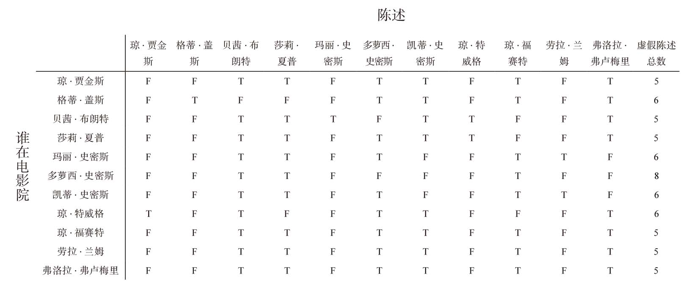
男人 J T P W S
妻子 t
我们还知道汤姆金斯是帕金斯的继父，也就是说汤姆金斯夫人是帕金斯的母亲。所以，我们在T的下面填入p。
男人 J T P W S
妻子 t p
根据题意，詹金斯的母亲是沃特金斯夫人的朋友，所以我们知道，沃特金斯夫人不是詹金斯的母亲。由于沃特金斯夫人也不可能是沃特金斯的母亲，因此，她只能是西姆金斯的母亲。
男人 J T P W S
妻子 t p s
最后，我们还知道沃特金斯夫人的婆婆（也就是沃特金斯的母亲）是帕金斯夫人的表姐妹，因此，帕金斯的妻子不是沃特金斯的母亲。既然这样，那么她只能是詹金斯的母亲。通过连续使用排除法，我们知道西姆金斯的妻子只能是沃特金斯的母亲。
男人 J T P W S
妻子 t p j s w
所以，西姆金斯的继子是沃特金斯。
斑马问题
这是一道表格智力题，所以我们先画出表格。一共有5间房子，涉及5种特征，所以画好的表格应该如下表所示。
我们根据每个语句逐步填写这些空格。
第9句说，住在正中间房子里的人喜欢喝牛奶，所以我们可以在第三列的饮料一格填入“牛奶”。第10句说丹麦人住在第一间房子里，所以在第一列的国籍一格里填入“丹麦”。第15句说丹麦人隔壁的房子是蓝色的，所以在第二列房子一格里填入“蓝色”。
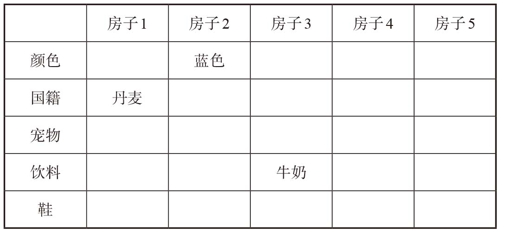
第6句告诉我们绿色房子和象牙色房子彼此相邻。因此，第一间房子不可能是绿色或象牙色的。但是，第一间房子也不可能是红色的，因为第2句告诉我们苏格兰人住在红色房子里，而我们知道丹麦人住在第一间房子里。因此，我们可以推断出第一间房子是黄色的。根据第8句，这间房子里的人穿的是橡胶底鞋。再结合第12句，我们知道第2间房子里有一匹马。
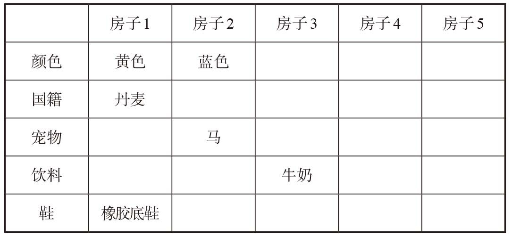
丹麦人喜欢喝什么饮料呢？第4句排除了咖啡，第5句排除了茶，第9句排除了牛奶，第13句排除了橙汁，所以丹麦人肯定喜欢喝水。
住在第2间房子里的人是谁？他肯定不是苏格兰人，因为房子是蓝色的；也不是希腊人，因为这间房子里的宠物是一匹马。因此，他或者是玻利维亚人，或者是日本人。但是，如果是日本人，那他喜欢喝什么饮料呢？不是水，不是牛奶，不是咖啡（第4句），也不是茶（第5句），所以日本人喜欢喝的饮料只能是橙汁。但是，根据第13句，他穿的是拖鞋，这与第14句相矛盾，因为第14句说日本人穿的是人字拖。所以，住在第2间房子里的肯定是玻利维亚人，而且他喜欢喝茶。
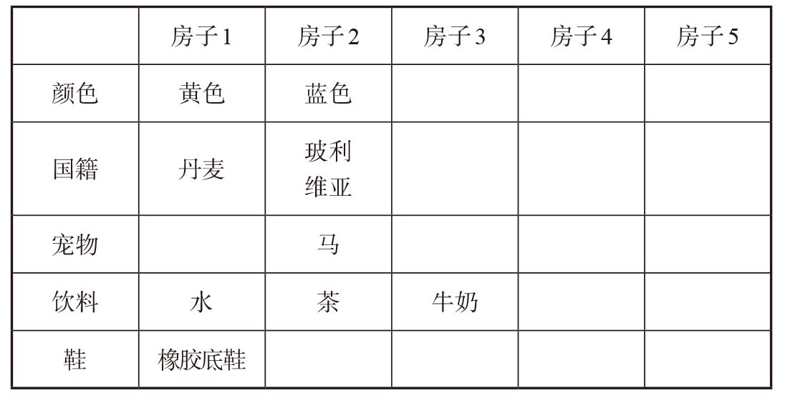
根据第6句，绿色房子和象牙色房子彼此相邻，这意味着红色房子只能是第3间或第5间。我们假设它是第5间，那么苏格兰人就住在这间房子里，第4句告诉我们他喜欢喝橙汁，第13句说他穿拖鞋。但是，如果是这样，第7句说的穿着粗革皮鞋的蜗牛主人是谁呢？他不是穿橡胶底鞋的丹麦人，不是养马的玻利维亚人，不是第3句说的养狗的希腊人，也不是第14句说的穿人字拖的日本人。所有国籍都不符合条件！所以，我们可以得出结论，第3间是红色房子，里面住的是苏格兰人。根据第6句，我们知道第4间和第5间房子分别是象牙色和绿色的。第4句说住在第5间房子里的人喝咖啡，由此可见，喝橙汁的人肯定住在第4间。根据第13句，穿拖鞋的人也住在第4间。
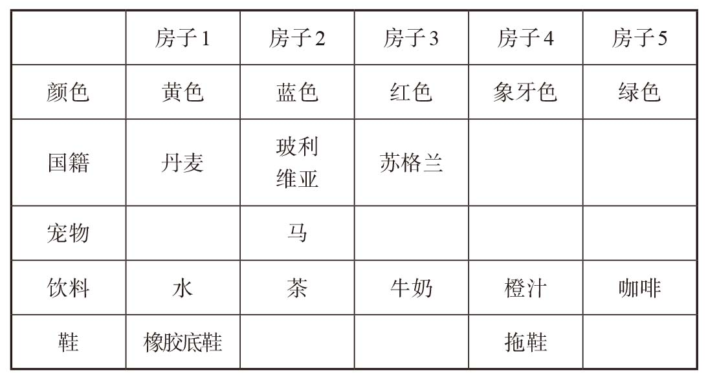
根据第14句，穿人字拖的日本人不可能住在第4间，因此他只能住在第5间，而住在第4间的只能是养狗的希腊人。
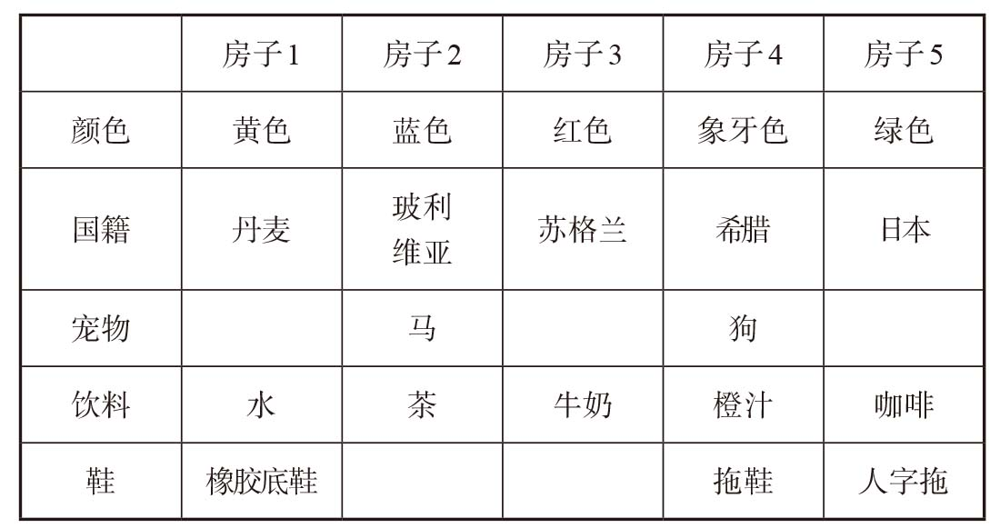
现在，表格里剩余的空格应该如何填写已经很清楚了：穿粗革皮鞋的蜗牛主人一定是苏格兰人，玻利维亚人穿的是勃肯鞋；根据第11句，丹麦人肯定养了一只狐狸。最后剩下的那个空格只能是斑马，它的主人是日本人。
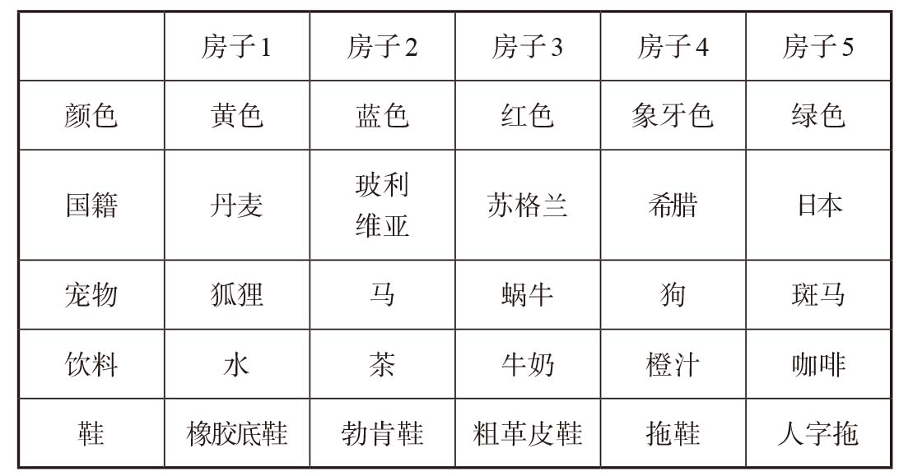
你也可以用其他方法填写表格，但最终结果肯定跟这个一模一样！
凯利班的遗嘱
这个问题该从何处入手呢？我们先回顾一下那三句话：
（1）任何见过凯利班打绿色领带的人都不得在洛之前挑选。
（2）如果1920年Y.Y.不在牛津，那么曾借雨伞给凯利班的人不能第一个挑选。
（3）如果Y.Y.或“批评家”拥有第二选择权，那么“批评家”要排在第一个坠入爱河的人前面。
我们的任务是找出洛、Y.Y.和“批评家”挑选凯利班赠书的先后次序。本题有一个关键条件：在解决这个问题时，每个语句都应该是必不可少的。换句话说，每个语句都必须包含有用的信息。只要有一句话在解题过程中没有给我们提供任何有用的信息，最后的答案就是错误的。
为了让语句（1）给我们提供信息，Y.Y.和“批评家”中必须至少有一人见过凯利班打着一条绿色领带。如果他们两个人都没见过，这句话就是多余的。因此，我们可以推断，洛不可能排在第三位，因为见过凯利班打着绿色领带的人必须排在他后面。
接下来，我们看语句（2）。如果Y.Y.在牛津，那么语句（2）将不能提供任何与排序有关的信息，所以我们可以认定Y. Y.不在牛津。此外，如果没有人曾借伞给凯利班，那么这句话仍然是多余的，因此可以认定有人曾借伞给凯利班。
那么，是谁把伞借给了凯利班呢？如果借伞给凯利班的是洛，那么从语句（2）可知，洛不能排第一位。我们根据语句（1）已经知道洛不排在最后一位，所以洛只能排在第二位。但是，如果洛排第二位，语句（3）就是多余的，因为只有当Y.Y. 或者“批评家”排第二时，语句（3）才能提供有用的信息。由此可见，借伞给凯利班的肯定不是洛。
如果Y.Y.和“批评家”都曾借伞给凯利班，那么根据语句（2）可知洛排第一位，根据语句（3）可知“批评家”排第二位，Y.Y.排第三位，而语句（1）又成了多余的。因此，Y.Y.和“批评家”当中只有一个人曾借伞给凯利班。同理，如果Y.Y.和“批评家”都见过凯利班打着绿色领带，从语句（1）可知洛排在第一位，而语句（2）是多余的。因此，看到凯利班打着绿色领带的要么是Y.Y.，要么是“批评家”，而不是两个人都见过。
假设Y.Y.见过凯利班打着绿色领带，并且曾借伞给凯利班。根据语句（1），我们知道Y.Y.不可能排在第一位，否则语句（2）就是多余的。因此，如果Y.Y.见过凯利班打着绿色领带，他就不曾借伞给凯利班。也就是说，借伞的人是“批评家”。同理，如果“批评家”见过凯利班打着绿色领带，由逻辑推理可知，Y.Y.肯定是借伞给凯利班的人。
在这两种情况下，洛都必须排在第一位。如果是这样，根据语句（3）可知，Y.Y.肯定是第一个坠入爱河的人，所以最终的排序是洛、“批评家”、Y.Y.。
三角枪战
三角枪战是逻辑问题中的一道经典题目。这道题的答案绝对违背了我们的直觉，也堪称和平主义的典范，因为丑陋获得最大生还机会的正确做法是第一枪不要瞄准任何人。
丑陋肯定不能瞄准邪恶。如果丑陋打死了邪恶，随后就会被百发百中的善良击毙。
如果丑陋瞄准善良，先干掉枪法最准的对手，结果会怎么样呢？如果丑陋杀死了善良，决斗就会继续在丑陋和邪恶之间进行。在这种情况下，丑陋未必会被杀死，但从概率看，情况对他不利。邪恶的枪法比丑陋好，而且拥有先开枪的优势。事实上，丑陋生还的概率为1/7，约等于14%。
［计算过程：邪恶一枪制胜的概率是2/3，两枪制胜的概率是（2/3）×（1/3）×（2/3），三枪制胜的概率是（2/3）×（1/3）×（2/3）×（1/3）×（2/3），以此类推。对这个无穷级数求和，得数是6/7。因此，丑陋最后生还的概率是1/7。］
如果丑陋没有打中善良，接下来就轮到邪恶开枪了。邪恶将瞄准善良，并且有2/3的概率杀死他。如果成功，决斗就会变成丑陋和邪恶两人之间的较量，不过这一次丑陋率先开枪。他获胜的概率略高于1/3，准确地说，是3/7或43%。如果邪恶没有打中善良，善良接下来就会杀死邪恶，把三角枪战变成丑陋和善良的决斗，由丑陋先开枪。在这种情况下，丑陋生还的概率正好是1/3。
换句话说，丑陋未打中任何一个对手的预测生还概率高于他直接杀死对手的预测生还概率。因此，他必须尽最大努力不要打中对手，最好的办法就是朝天开枪。
事实上，只要丑陋不打中那两名对手，他的生还概率就是三个人中最高的。我就不用概率计算来为难你们了，直接把计算结果告诉你们：丑陋有40%的概率成为最后的生还者，邪恶的生还概率约为38%，而善良的生还概率大约只有22%。
这个故事告诉我们，只要有可能，一定要让最危险的对手自相残杀。
苹果和橙子
一共有三个盒子，分别贴有“苹果”“橙子”“苹果和橙子”的标签，我们必须从其中一个盒子里取出一个水果。
我们先看看从每个盒子里拿一个水果会出现哪些可能的结果。比如，我们从贴有“苹果”标签的盒子里拿出一个水果。如果是苹果，我们就知道盒子里肯定有苹果和橙子。这个盒子里不可能只装有苹果，因为我们知道所有标签都贴错了，而这个盒子的标签上写着“苹果”。现在，还有两个盒子，其标签分别是“橙子”和“苹果和橙子”。里面的水果只有两种可能：一个盒子只装有橙子，另一个只装有苹果。贴有“橙子”标签的盒子里不可能装有橙子，因为标签是错的，所以它肯定装有苹果，而贴有“苹果和橙子”标签的盒子里只能装有橙子。至此，我们已经正确地确定了这三个盒子里的水果。太棒了！看来我们已经解决了这个问题。但是，现在高兴还为时过早，因为选择贴有“苹果”标签的盒子之后，从中拿出来的水果也有可能是橙子。如果我们从贴有“苹果”标签的盒子中取出的是橙子，那么盒子里装着的可能是橙子，也可能是苹果和橙子，我们没有办法确定。同样，如果我们选择贴有“橙子”标签的盒子，那么从盒子里拿出来的可能是一个苹果。此时，我们无法确定盒子里装着的到底是苹果，还是苹果和橙子。
要解决这个问题，我们必须选择贴有“苹果和橙子”标签的盒子，并从中取出一个水果。事实上，你不必完成上一段介绍的推理过程，就已经可以断定应该选择这个盒子了。如果某个智力题要求我们从三种选择中找出唯一正确的解决方案，且三个选项中有两个是可以互换的，就像本题中贴有“苹果”和“橙子”标签的盒子一样，那么解决这个问题的正确方法肯定是选择剩下的那个选项。
好了，我们现在从贴有“苹果和橙子”标签的盒子中取出一个水果。如果是苹果，我们就会知道盒子里一定只有一个苹果。剩下的分别贴有“苹果”和“橙子”标签的两个盒子，则分别装有橙子及苹果和橙子。贴有“橙子”标签的盒子里不可能只装有橙子，所以它肯定装有两种水果，而贴着“苹果”标签的盒子里则装着橙子。至此，我们就可以为所有盒子重新贴上正确的标签了。如果从贴有“苹果和橙子”标签的盒子里拿出来的是橙子，通过上述步骤，我们同样可以知道这三个盒子里分别装有什么水果。
盐、胡椒和调味酱汁
首先，我们需要确定三人中的“观察者”到底是谁。看来，这个人有可能是席德。但是，如果真的是席德，就会自相矛盾。题目说，这个人拿的不是调味酱汁。如果这个人是席德，那么他拿的也不可能是盐，因为他姓索尔特。也就是说，他拿的肯定是胡椒。从里斯的姓氏可知，他拿的不可能是调味酱汁，也不可能是盐，因为在拿盐的那个人说完话之后他紧接着说话了。也就是说，里斯拿的必然也是胡椒，这又自相矛盾了。
那么，观察者会是菲尔吗？菲尔这个名字的确很有男子汉气概！但是，如果这个人是菲尔，同样会自相矛盾。从对话可以看出，这个人与拿盐的人不是同一个。所以，如果菲尔是观察者，那么他拿的既不是盐，也不是胡椒（胡椒和他的姓氏形成了对应关系）。所以，他拿的肯定是调味酱汁，但是题目告诉我们这个人拿的不是调味酱汁。
通过排除法，我们可以知道那个人肯定是里斯。他拿的不是盐，因此肯定是胡椒。由此可见，席德拿的是调味酱汁，菲尔拿的是盐。
石头、剪刀、布
我们可以利用下面这个方法推导出游戏的结果：
考虑亚当出6次剪刀的情况。因为我们知道没有平局，所以每次亚当出剪刀时，夏娃要么出石头，要么出布。夏娃出过2次石头和4次布，由此我们可以推断出，她每次出石头或布的时候，亚当出的都是剪刀。因此，亚当的剪刀输了2次（对上了石头），赢了4次（对上了布），总分是亚当4∶2领先夏娃。
在剩下的4个回合中，夏娃出的全部是剪刀，亚当则出过3次石头、1次布。这4个回合的比分是亚当3∶1领先夏娃。
因此，最后的结果是亚当以7∶3的比分赢了夏娃。
脸上有烟灰的是你
阿特金森小姐认为自己的脸是干净的，同时认为其他两个乘客在相互嘲笑对方。（我们假设这两名乘客分别坐在阿特金森小姐的左右两边。）然后，阿特金森小姐从其中一名乘客（比如坐在她左边的那名乘客）的角度来考虑当前的情况。这名乘客可以看到右边那名乘客的脸上有烟灰，还能看到阿特金森小姐的脸很干净。左边这名乘客笑了，是因为右边那名乘客的脸上有烟灰。阿特金森小姐接着想，左边乘客看到右边乘客在笑，那左边乘客能找到右边乘客发笑的原因吗？如果左边乘客认为自己的脸上没有烟灰，那么右边乘客嘲笑的对象是谁呢？阿特金森小姐想，唯一的可能（虽然她不喜欢这种可能性）就是右边乘客在嘲笑自己，所以她立刻掏出手帕，开始擦拭自己的脸。
40名不忠的丈夫
如果你已经解决了上面两个问题，或者看过答案了，那么这个问题肯定难不住你。你可能已经注意到，这些问题都是相同主题的不同变体，第一个问题涉及两个女孩，第二个问题涉及三名乘客，这道题中则出现了40个妻子。
事实上，如果你把“脸上污垢”问题中的孩子人数从两个增加到40个，把“脸上有泥巴”替换成“对妻子不忠的丈夫”，再把“向前走一步”换成“杀死她的丈夫”，就会变成现在这道题。
这道题最精彩的地方是国王给出的“至少有一名丈夫对妻子不忠”这条信息。对于后续推理而言，这条信息似乎无关紧要，可能是冗余信息，因为每名妻子都知道至少有一名丈夫对他的妻子不忠。实际上，他们都知道有39个品行不端的丈夫。然而，这类信息却引发了一系列不同寻常的事件。
在“脸上污垢”问题中，两名女孩最后意识到她们脸上都有泥巴，因此都向前走了一步。本题则像一部恐怖电影，高潮直至电影快结束时才到来：40个妻子同时杀死了她们的丈夫。
这个结果是如何产生的？假设只有一个丈夫在欺骗自己的妻子，而其他39个丈夫都没有不忠行为，会发生什么情况呢？因为所有妻子在一开始时都认为自己的丈夫对自己是忠诚的，在这种情况下，通奸者的妻子知道其他所有丈夫都对他们的妻子是忠诚的。又因为只有一个丈夫与其他女子私通，所以他的妻子当然不知道镇上还有其他通奸者。因此，在听说至少有一个丈夫不忠之后，她意识到这一定是她自己的丈夫（而不可能是其他任何人）。于是，第二天中午，她杀死了自己的丈夫。
接下来，我们假设有两个不忠的男人。这两个人的妻子（我们称之为阿格尼斯和波尔塔）都只知道有一个男人不忠，因为所有妻子都不知道自己丈夫的不忠行为。阿格尼斯知道波尔塔的丈夫对波尔塔不忠，波尔塔知道阿格尼斯的丈夫与人私通，其他38名妻子都知道阿格尼斯和波尔塔的丈夫行为不检点。因为每个人都知道至少有一个丈夫不忠，所以在听说“至少有一名丈夫对妻子不忠”之后，镇上所有人都无动于衷，第二天也没有发生流血事件。
然而，到了下午，阿格尼斯和波尔塔都很困惑。阿格尼斯推断（与我们在前面完成的推理过程一样），如果波尔塔的丈夫是镇上唯一的通奸者，在她听说至少有一名丈夫有不忠行为之后，她就应该在第二天中午杀死自己的丈夫，但是波尔塔并没有这样做。因此阿格尼斯得出结论，波尔塔肯定知道另一个人有通奸行为。这个人是谁呢？只能是她自己的丈夫，而不可能是其他任何人！因此，第三天中午，阿格尼斯杀死了自己的丈夫。同时，波尔塔也明白过来，并杀死了自己的丈夫。换句话说，当有两个丈夫有不忠行为时，在宣布“至少有一名丈夫对妻子不忠”之后的第二天，他们都会被杀了。
我们可以继续考虑有三个不忠丈夫的情况。这三个人的妻子都只会想到有两个不忠的丈夫，所以当第二天过去之后她们发现所有人的丈夫都活着的时候，她们就都明白了。第三天中午，这三名妻子杀死了各自的丈夫。综上所述，如果有40个不忠的丈夫，那么直到第40天中午，大屠杀才会发生。
如果国王没有提及“至少有一名丈夫对妻子不忠”，上述逻辑推理就不成立了，广场上的大屠杀也将得以避免。
一盒帽子
如果阿尔杰农看到另外两个人都戴着绿色帽子，他就会知道自己的帽子是红色的。只有在这种情况下，他才能知道自己帽子的颜色。如果他不知道自己帽子的颜色，就说明他看到的两顶帽子都是红色的，或者是一红一绿。
同样，巴尔塔扎看到的两顶帽子也必然都是红色的或者一红一绿。也就是说，我们可以推断出三种情况：第一，所有人都戴着红色帽子；第二，阿尔杰农和巴尔塔扎都戴着绿色帽子；第三，只有卡拉塔克斯戴着绿色帽子。
在题目告诉我们卡拉塔克斯看到的都是红色帽子之后，我们可以排除第二种情况。现在，假设第三种情况是真实的，即卡拉塔克斯戴着绿色帽子，我们重复上述推理过程，看看会得出什么结果。阿尔杰农会看到一顶绿色帽子和一顶红色帽子，因此他不知道自己的帽子是什么颜色。巴尔塔扎可以看到卡拉塔克斯戴着绿色帽子，既然阿尔杰农不知道他的帽子的颜色，巴尔塔扎就可以断定自己戴的不是绿色帽子，否则阿尔杰农就会说他知道自己帽子的颜色！所以，巴尔塔扎知道自己戴着一顶红色帽子，在这种情况下，他就不能说他不知道自己帽子的颜色。因此，如果假设第三种情况是真实的，就会得出自相矛盾的结论。由此可见，只有第一种情况是正确的，即卡拉塔克斯戴的是红色帽子。
连续数字
为了解决这个谜题，我们需要从每个语句中获取一些信息，以逐渐缩减西庇太可能选择的数字组合的种类。
西庇太可以从1、2、3、4、5等数字中做出选择。如果赞茜知道其中一个数字是1，那么她可以断定伊维特听到的数字肯定是2，因为她知道这两个数字是连续的。由此可见，赞茜听到的数字不可能是1，我们可以从列表中划掉数字1。如果赞茜听到的是数字是2，那么伊维特听到的数字可能是1，也可能是3，所以赞茜无法知道伊维特到底听到了哪个数字。同样，对于大于2的所有数字，伊维特听到的数字都有两种可能，要么比那个数大1，要么比它小1。所以，根据第一个语句，我们知道赞茜听到的数字是2或者大于2。
同理，伊维特听到的数字也不可能是1。可能是2吗？如果她听到的数字是2，她就知道赞茜听到的数字肯定是1或3。但由于她是一个高明的逻辑学家，所以她可以推断出赞茜听到的数字不是1。也就是说，如果伊维特听到的是2，她知道赞茜听到的数字肯定是3，但她说她不知道赞茜听到的数字是几，两者相互矛盾。因此，我们可以从伊维特的数字列表中剔除2这个数字。如果伊维特听到的是3或更大的数字，那么她说她不知道赞茜听到的数字是几，就不是在说谎，因为从逻辑上讲，赞茜的数字可以比伊维特的数字大1或者小1。
综上所述，我们知道赞茜听到的是2或大于2的某个数字，而伊维特听到的则是3或大于3的某个数字。
接着，赞茜说她知道这个数字了。如果她的数字是2，那么她知道伊维特的数字肯定是3。如果她的数字是3，那么她知道伊维特的数字一定是4。如果赞茜听到的数字是4，那么伊维特听到的数字可能是3或者5，无法确定。对于所有大于4的数，都会得出同样的结果。换句话说，如果赞茜说她知道伊维特听到的是哪个数字且没有撒谎，那么她听到的一定是2或3。
如果赞茜听到了2或3，伊维特听到的就一定是3或4，因为西庇太写的这两个数字是连续的。因此，西庇太轻声告诉两个女孩的数字是2和3，或者3和4。也就是说，我们可以断定其中一个数字一定是3。
谢莉尔的生日
谢莉尔先列出了生日的可能日期，然后告诉阿尔伯特她的生日在5月、6月、7月或8月，并告诉伯纳德她的生日在14日、15日、16日、17日、18日或19日。我们可以根据对话中每个句子包含的信息，逐一排除所有不正确的选项，直至最后得出正确答案。
阿尔伯特说他不知道谢莉尔的生日是哪一天，但他知道伯纳德也不知道。
每个月份在谢莉尔给出的那些日期中至少出现了两次，所以无论她告诉阿尔伯特的是哪个月，都至少有两个可能的日期。所以，阿尔伯特肯定无法确定她的生日。这个语句的前半部分是多余的。
然而，因为阿尔伯特知道伯纳德不知道谢莉尔的生日，所以他可以肯定伯纳德听到的那个数字在这些日期中不能只出现一次。只出现了一次的是18和19这两个数字，如果伯纳德听到的是18日或19日，他就能推断出谢莉尔的生日。而阿尔伯特只在一种情况下才能知道伯纳德听到的不是18日或19日，那就是谢莉尔告诉他的那个月份里不能有18日和19日这两个可能选项。我们可以据此排除5月和6月，也就是说，阿尔伯特听到的一定是7月或8月。
伯纳德说，起初他不知道谢莉尔的生日（由此可知生日不是18日，也不是19日），但是后来他又说他知道了。由此可见，他听到的那个日子肯定只有一个月份与之对应。因此，我们可以排除14日，因为7月14日和8月14日都是谢莉尔给出的选项。所以，伯纳德听到的肯定是15日、16日或17日。
接着，阿尔伯特说他知道生日是哪一天了，这意味着他听到的那个月份现在只能与一个日子对应。现在剩下的日期一共有三个，即7月16日、8月15日和8月17日。综上所述，答案是7月16日。
尽管7月16日是正确答案，但是，如果对这个问题的理解稍有不同，最后就会得出一个不同的答案——8月17日。网上关于哪种方法正确的辩论可能有助于我们更好地分享和讨论这个问题。为了平息争议，出这道题的新加坡和亚洲学校数学奥林匹克竞赛公开澄清了这个问题，并指出8月17日这个答案是错误的。
我们来看看8月17日这个答案是如何得出的。通过这个例子，我们可能看出逻辑趣题有时候非常微妙，需要我们小心鉴别哪些是已知信息，哪些是未知信息。
阿尔伯特一开始说他不知道谢莉尔的生日，但他知道伯纳德也不知道。如果你认为关于伯纳德的这些信息是阿尔伯特自己推断出来的，那么如上所述，最终的正确答案就是7月16日。但是，阿尔伯特知道伯纳德不知道谢莉尔的生日是哪一天，也有可能是因为有人告诉了他这些信息。
如果是这样，阿尔伯特可以排除包含18日和19日这两个日期，因为他一开始就可以看出这两个数字只出现过一次。当阿尔伯特说他不知道生日的时候，就可以推断出他听到的月份不是6月，因为在剩下的日期中6月只出现了一次。因此，我们可以将6月排除在外。但是，与之前情形不同的是，他听到的那个月份还有可能是5月，所以我们不能将5月排除。随着对话继续，伯纳德说他之前不知道生日是哪一天，但现在他知道了。只有他听到的那个数字在剩下的可能日期中只出现一次时，伯纳德才有可能知道谢莉尔的生日到底是哪一天。现在，剩下的可能日期还有5月15日和16日，7月14日和16日，以及8月14日、15日和17日。其中，数字17只出现了一次，所以答案是8月17日。
这个解释似乎非常合乎逻辑，但我认为新加坡和亚洲学校数学奥林匹克竞赛的解释是最恰当的，即伯纳德不知道谢莉尔的生日这个信息，是阿尔伯特自己推断出来的，事先并没有人告诉他。
丹尼丝的生日
解决谢莉尔生日问题的方法同样适用于本题。我们可以从每句话中找到一些线索，然后逐一排除不正确的日期。但是，丹尼丝问题涉及的信息更多，需要考虑各种不同情况。
以下是丹尼丝给出的可能日期：
2001年2月17日 2001年3月13日
2001年4月13日 2001年5月15日
2001年6月17日 2002年3月16日
2002年4月15日 2002年5月14日
2002年6月12日 2002年8月16日
2003年1月13日 2003年2月16日
2003年3月14日 2003年4月11日
2003年7月16日 2004年1月19日
2004年2月18日 2004年5月19日
2004年7月14日 2004年8月18日
阿尔伯特（知道丹尼丝生日在几月）知道伯纳德（知道丹尼丝生日在几日）不知道丹尼丝的生日。在给出的这些日期里，11日和12日只出现过一次，对应的日期是2003年4月11日和2002年6月12日，所以我们可以排除这两个日期。为了看得清楚，我们可以将这两个日期从列表中划掉。
既然阿尔伯特知道丹尼丝的生日不在4月，也不在6月，我们就可以把这两个月的其他日期都排除在外：2001年4月13日、2002年4月15日和2001年6月17日。
伯纳德（知道生日在几日）仍然不知道丹尼丝的生日到底是哪一天，所以我们可以对剩下的日期做进一步排除。如果他听到的那个数字在这些日期中只出现过一次，他就会知道生日到底是哪一天了。由于数字15和17只出现一次，所以我们可以将2001年5月15日和2001年2月17日这两个日期划掉。
但伯纳德还知道谢莉尔（知道生日所在的年份）也不知道丹尼丝的生日是哪一天。谢莉尔只在一种情况下才会知道丹尼丝的生日：她听到的年份是2001年，因为只有一个可能的日期与之对应，即2001年3月13日。由此可知，伯纳德听到的不是13，我们可以把这个数字从列表中删除。再见，2001年3月13日和2003年1月13日！
谢莉尔不知道生日是哪一天的这个事实并没有给我们提供任何信息，但是如果她知道阿尔伯特仍然不知道具体日期，阿尔伯特听到的那个月份在剩下的日期中就会出现不止一次。只出现一次的月份只有一个，即在2004年1月19日这个日期中出现的1月。这说明谢莉尔听到的年份不是2004年，因此，我们可以排除2004年的所有日期。
阿尔伯特现在知道了生日的日期，所以他知道的那个月份只能在剩下的日期中出现一次。因此，我们可以排除3月份的两个日期。至此，我们还剩下2002年5月14日、2002年8月16日、2003年2月16日和2003年7月16日这4个日期。
如果伯纳德现在知道具体日期，就说明他听到的表示几日的数字在剩下的这4个日期里只出现了一次，由此可见，正确答案是2002年5月14日。
孩子们的年龄
这位教堂司事有三个孩子，他们的年龄乘积是36。这条信息意味着我们可以将孩子们的年龄限定在下面这些组合中。最后一列粗体数字表示的是三个数字的和。
1×1×36 38
1×2×18 21
1×4×9 14
1×6×6 13
2×2×9 13
2×3×6 11
3×1×12 16
3×3×4 10
我们可以假定牧师知道或者可以去查看司事家的门牌号。如果门牌号在这些粗体数字中只出现一次，牧师就会立刻知道这三个孩子的年龄。只在门牌号是13时，他才需要知道更多的信息。因此，我们可以确定门牌号一定是13，孩子们的年龄分别是1、6、6或2、2、9。
牧师肯定知道自己儿子的年龄，而且我们假定司事也知道牧师儿子的年龄。由于司事告诉牧师，凭借这条信息，他可以确定三个孩子的年龄，所以牧师儿子的年龄一定比其中一组的三个数字都大，而比另一组中至少一个数字小。换句话说，牧师的儿子肯定是7岁或8岁。如果牧师的儿子是10岁或11岁，他的年龄就会大于这两个组合中的所有数字。在这种情况下，司事不可能说牧师可以解决这个问题了。如果牧师的儿子是7岁或8岁，那么司事的三个孩子就分别是1岁、6岁和6岁。
公共汽车上的奇才
我们知道A有不止一个孩子，他们的年龄都是正整数，而且年龄之和是公共汽车线路的编号。我们还知道，在A的孩子中，1岁的孩子不多于1人。
下面，我们利用这些信息，检验哪些公共汽车线路编号符合题意。
这条公共汽车线路的编号不可能是1，因为任何两个正整数相加的和都不会等于1。
编号也不可能是2，因为相加之和等于2的两个正整数只能是1和1，这就意味着A有两个1岁的孩子。
如果公共汽车线路的编号是3，那么和为3的情况只能是2 + 1或者1 + 1 + 1。我们可以排除后者，因为它意味着A有3个1岁的孩子；我们也可以排除前者，因为如果是3路公共汽车，那么在A告诉B自己有两个孩子时，B立刻就会知道这两个孩子的年龄分别是2岁和1岁。所以这条公共汽车线路的编号不可能是3。
下面的表格列出了公共汽车线路编号为4时A的孩子的可能年龄。此外，我还统计了每个年龄组合对应的孩子人数和A的年龄。
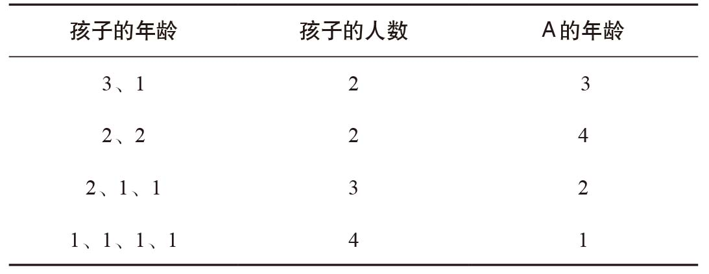
上表中，“孩子的人数”与“A的年龄”没有一行是相同的，也就是说每一组数字都是独一无二的。这样一来，一旦确定了“孩子的人数”和“A的年龄”，B就能推断出孩子的年龄了。所以，公共汽车线路编号不能是4。
我们还需要画更多的表格，验证公共汽车线路编号为其他值的情况。最后，我们来验证编号为12的情况。以下是部分可能组合：
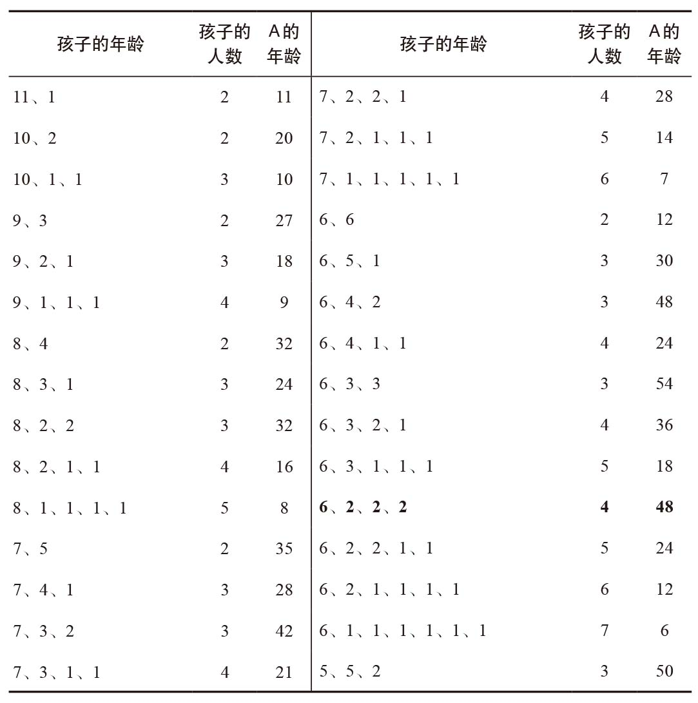
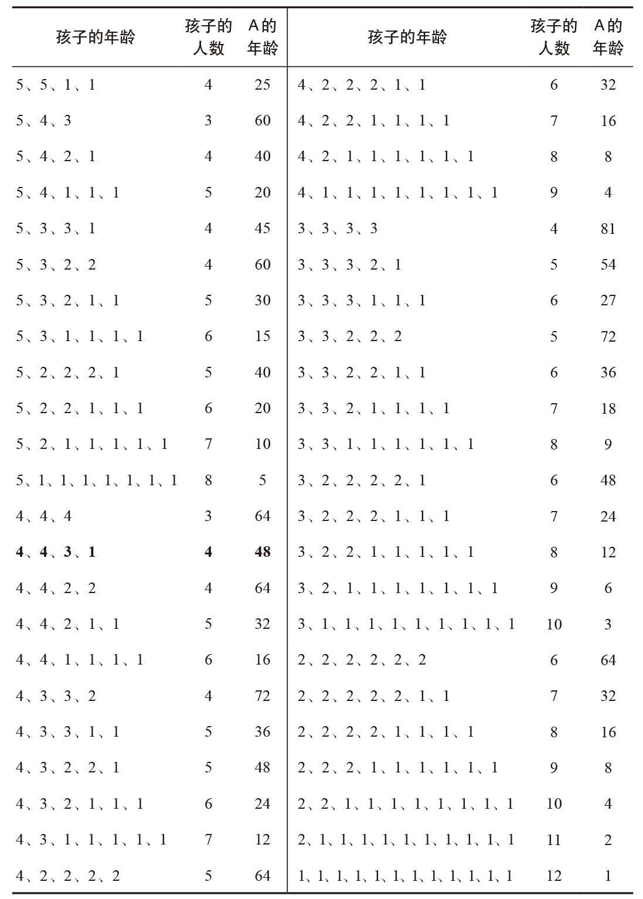
解题工作花了很长时间，但我们终于找到了想要的东西。我用粗体标出了符合条件的数字。
即使B知道A有4个孩子，并且知道他们的年龄乘积是48，他仍然无法确定每个人的年龄，因为这4个孩子可能分别是6岁、2岁、2岁、2岁，也可能是4岁、4岁、3岁、1岁。由于B知道自己无法推断出孩子的年龄，所以他知道A肯定是48岁。进而，我们知道他们乘坐的是12路公共汽车。
我在正文题干讲过，符合条件的公共汽车线路编号只有一个，因此，既然我们已经发现了这个编号，就说明问题已经解决了。
如果公共汽车编号是13，你依照上述方法绘制表格会发现，符合A的年龄是48且有5个孩子的组合有两种，这些孩子的年龄分别为6岁、2岁、2岁、2岁、1岁，或者4岁、4岁、3岁、1岁、1岁；符合A的年龄是36岁且有3个孩子的组合也有两种，分别为6岁、6岁、1岁，或者4岁、3岁、3岁。所以当A告诉B他的年龄和孩子数目不足以计算出孩子的年龄时，B就会得出A的年龄或者是48，或者是36。但究竟是哪一个，B就不得而知了。这与题干最后B的恍然大悟不符合。
如果公共汽车编号是14，我们可以将以上组合加入一个年龄为1岁的孩子，这样，A的年龄为48时，可能的年龄组合就变成：6岁、2岁、2岁、2岁、1岁、1岁，或者4岁、4岁、3岁、1岁、1岁、1岁；A的年龄为36时，可能的年龄组合就变成6岁、6岁、1岁、1岁，或者4岁、3岁、3岁、1岁。这样一来，B也无法推测出A的年龄是多少。（我们每增加一个1岁的孩子，结果都是一样，A的年龄不变，每组孩子的个数增加一个。）因此，我们也可以将编号为14的情况排除。同理，我们可以将编号为15、16……的情况都排除在外。
康威设计这个难题的高明之处在于，他发现这道题只有唯一的答案。
元音字母游戏
你需要翻看分别印有字母A与数字2的两张卡片。
显然，我们必须翻看印有字母A的那张卡片，看看它的反面是不是奇数。我们不需要翻看印有字母B的卡片，因为B是辅音字母，与题意无关。
大多数人犯的错误是，他们以为必须翻看印有数字1的那张卡片，因为1是奇数，所以必须看看它的反面是不是印有元音字母。但这种逻辑是错误的。如果另一面是元音字母，就说明规则有效。然而，如果另一面是辅音字母，那么它的反面是偶数还是奇数都无所谓，因为规则不涉及辅音字母。
但是，我们还必须翻看印有数字2的卡片，以确保另一面印着的不是元音字母，否则，规则就不成立了。
这个问题是心理学家彼得·沃森（Peter Wason）于1966年提出的。大多数人得出错误的答案，并不是因为他们没有理解这个问题，而是因为他们掉入了陷阱，把推理工作建立在未知信息（卡片背面的内容）而不是已知信息（卡片正面的奇数）的基础之上。我们懒惰的大脑并不善于解决逻辑难题！
然而，如果同样的问题在表述上稍做改变，使用大家比较熟悉的社会背景，那么大多数人都会得出正确的答案。下面的卡片在正反两面分别印有一种饮料名称和一个数字。每张卡片代表一个人，数字表示年龄，饮料名称表示他们喜欢喝这种饮料。
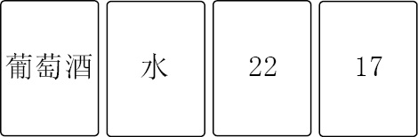
要验证下面这条规则，需要翻看哪些卡片呢？
如果一个人喜欢喝酒，那么他的年龄肯定超过18岁。
很明显，我们需要翻看印有葡萄酒的那张卡片。但更明显的是，我们还需要翻开那张印有数字17的卡片，看看他喝的是什么。我们不需要知道那位22岁的年轻人喝的是什么，因为他们可以随心所欲地选择自己喜欢的饮料。